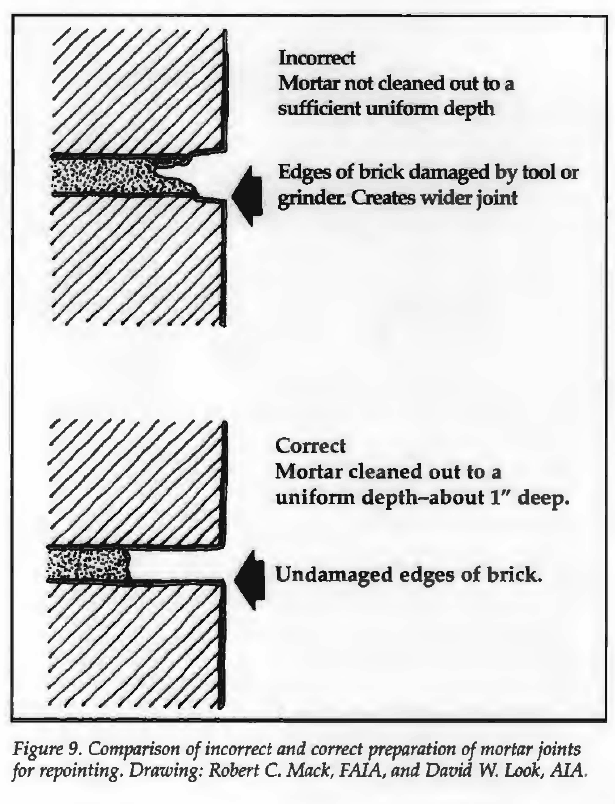
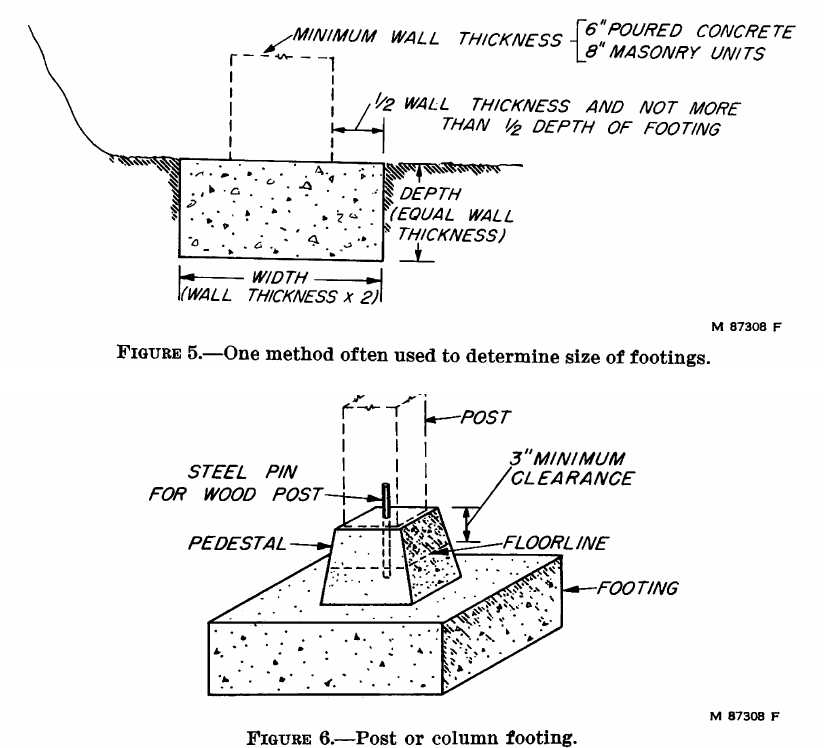
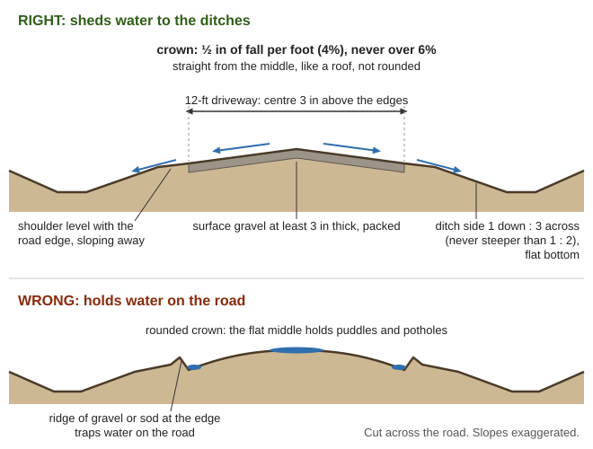
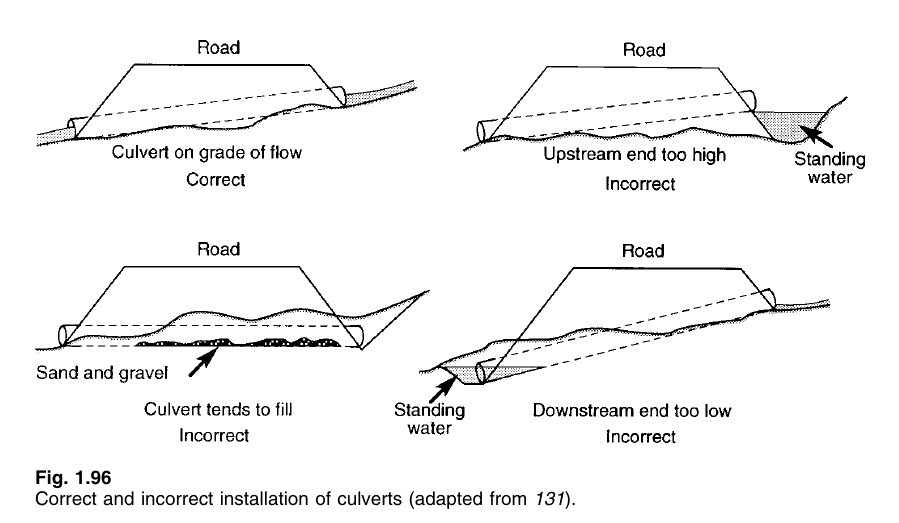
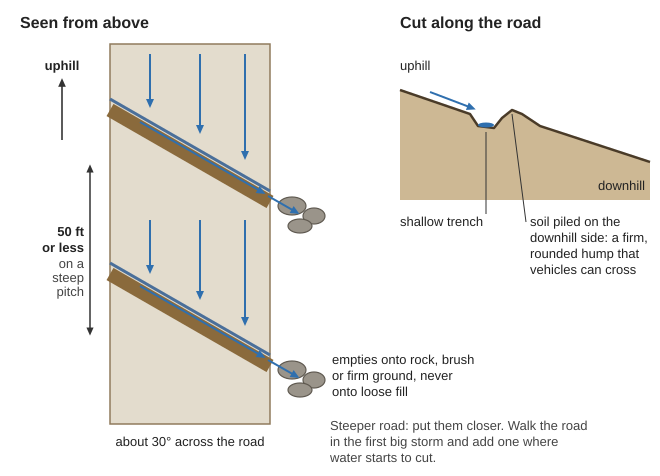

How to lay brick and stone, pour and patch concrete, and keep a gravel road passable when no paving crew is ever coming: lime, cement-lime, earth and fire-clay mortars; concrete mixed by hand; what you can honestly build without store cement; why asphalt can't be made at home and how to patch what's left; and roads, ditches and culverts. Burning lime is in "Making lime" in the Natural Building guide. The main books are in Shelter-Building\Concrete-Masonry (Army FM 5-428 Concrete and Masonry; Gillmore's 1864 Limes, Hydraulic Cements and Mortars), Shelter-Building\Roads (FHWA Gravel Roads; Army FM 5-436 Paving and Surfacing) and Natural-Building\Plasters-Lime-Floors. Work out quantities with the Practical Math guide, the Calculator and the Unit Converter.
The short version
Wet cement burns skin slowly: "you may not feel anything for several hours" (CAWST, p. 38). Goggles, gloves, long sleeves; rinse an eye with clean water at least 15–20 minutes.
Less water makes stronger concrete. About 6 gallons per 94-lb sack (VITA, p. 290); never loosen a stiff mix with water alone (VITA, p. 296).
Keep concrete wet at least 7 days. Never kept damp, it ends at about 60% of its strength (Peace Corps Wells, p. 249).
Mortar must be softer than the brick, or the bricks crack instead of the joints (NPS Brief 2, p. 4). 1 cement : 1 lime : 6 sand suits most new work (FM 5-428, p. 196).
Plain lime hardens only in moist air, never under water or in wet ground (Gillmore, p. 76). Wet places need hydraulic lime, a pozzolan or cement.
Asphalt can't be made at home: it's left over from refining crude oil (FM 5-436, p. 15). Plan on gravel.
A gravel road lives on drainage: crown it ½ in per foot (4%), never over 6%, and keep ditches and culverts clear (FHWA, p. 22).
Lime for mortar: what's new beyond burning it
Stone, burning, slaking and the quicklime safety box are in "Making lime" in the Natural Building guide. Four more things matter once lime goes into mortar:
Plain ("fat") lime hardens only in moist air. It sets by drying, then slowly taking carbon dioxide from the air; "Dry carbon dioxide will not react with dry slaked lime", so soak the work often while it sets (NBS Circular 30, pp. 11–12). It "will not harden under water", so it's "unsuitable for masonry under water, or for foundations in damp soils", and it shrinks too much to use without plenty of sand (Gillmore, p. 76).
Wood-burned lime is the good stuff: lime burned cooler is better, "why wood-burned lime generally commands a higher price" (NBS Circular 30, p. 8). Kilns at Rockland burned hemlock, pine, spruce and fir, 4 cords per 100 barrels of 230–240-lb lime, 42–48 hours in the heat (Gillmore, p. 149): about ⅓ cord per ton(arithmetic).
Magnesian (dolomitic) lime slakes slowly, never "burns", works smoother and made the stronger mortar in the Bureau's tests (NBS Circular 30, pp. 13–14).
Hydraulic lime sets in wet places. Limestone with under 12% clay gives slightly hydraulic lime; 18–25%, eminently hydraulic (PA Lime, p. 3). It slakes slowly with little heat or steam and swells far less (Gillmore, p. 77). Looks tell you little: "insist upon having some of the stone actually burned" (NBS Circular 30, p. 8). Test it: Gillmore sank one cake of stiff paste in water at once and another after it set in air, and timed their hardening (p. 86). Paste that firms up under water within days is hydraulic; paste that stays soft is fat lime (rule of thumb).
Make hydraulic lime from fat lime and clay ("twice-kilned"; Gillmore, pp. 92–93):
Mix well-slaked lime with smooth potter's clay: about 10% clay gives "moderately hydraulic" lime.
Roll balls 2–3 in across and dry them completely; damp clay stays inert.
Burn at a bright red heat with a good draft. The balls can ride on top of an ordinary lime burn. Judge the heat with the heat-colour chart in the Blacksmithing guide.
Grind to powder and keep it dry.
Pozzolans (the Roman trick). A pozzolan "is a substance which, when mixed with lime and water, hardens as a cement" (PA Quake Housing, p. 4): fine silica and alumina that react with slaked lime (Wood Handbook, p. 275).
Lightly burned clay: "Artificial pozzuolana is produced whenever clay is subjected to a slight calcination"; the Romans used brick and tile dust, and forge scale and the ashes from under a lime kiln's grate work too (Gillmore, p. 99). In France, clay was dried and baked in an ordinary lime kiln with 1 measure of charcoal to 16–18 of clay (p. 100). Volcanic ash and rice-husk ash also work (PA Lime, pp. 3–4).
Mixes: harbour mortar at Algiers was 1 lime putty : 1 sand : 1 pozzolana (Gillmore, p. 110); test mortars used 2 pozzolana : 1 lime (p. 296). Use fat lime, not hydraulic, and let the mix stand a while before the last remixing (p. 309).
Be honest: those used volcanic pozzolana, and pozzolans "should be tested first" (FM 5-428, p. 33). Brick dust is weaker: make test cakes, keep them damp and give them weeks before trusting a wall to it (rule of thumb).
Stretching scarce cement: in 1:4 or 1:5 mortar "at least one-third of the cement may be replaced by slaked lime without loss of strength" (Henley's, p. 694); lime up to 15% of the cement's weight also makes it more watertight (NBS Circular 30, p. 17).
The one rule: softer than the brick. Harder mortar "will not 'give'", so the bricks crack and spall instead (NPS Brief 2, pp. 3–4). Granite can take strong mortar; soft brick wants lime (p. 7). Bagged masonry cement has no lime and "can damage historic masonry" (p. 6).
Measure every part with the same bucket; sand damp and loose.
Cement-lime: mix the dry parts first, add half the water, mix 5 minutes, then the rest a little at a time.
Lime putty: put the sand into the putty. Beating it with a mallet or ax handle and chopping with a hoe makes it work better. Lime and sand alone keep "indefinitely" covered damp; once cement goes in, they don't.
Use it in time: remix mortar that stiffened by drying, but throw out any that has begun to set; use it within 2½ hours above 80 °F, 3½ below (FM 5-428). Repointing old walls, NPS says 30 minutes to 1½ hours, no added water.
Never use mortar that froze; add no "antifreeze" (FM 5-428, p. 197).
Wet the bricks, not the blocks: wet clay brick that drinks fast; never wet concrete blocks (FM 5-428, p. 194). Earth blocks: if 20 drops of water in a 1-in circle vanish in under 1½ minutes, wet them (Peace Corps, p. 104).
Earth, chimney and firebrick mortars:
Adobe: "mud without straw", ½–1-in joints; 1 cu ft lays 25–30 bricks of 4 × 10 × 16 in (USDA FB 1720, p. 10). Never repair adobe with lime or cement mortar (NPS Brief 5, p. 7).
Stabilised-soil mortar for pressed blocks: low-clay soil, sieved, with twice the blocks' stabiliser. Test two blocks mortared together: no open cracks after a day; after 7 days, dropped from shoulder height onto a corner, some cracks should run through the blocks (Peace Corps, p. 104).
Chimneys: cement mortar "is more resistant to the action of heat and flue gases than lime mortar": 1 portland : 1 lime : 6 sand, and "Firebrick should be laid with fire clay" (FB 1889, p. 8). In quakes, masonry chimneys need four ½-in bars grouted full height, and factory-built ones are "the better choice for light-frame houses" (FEMA 232, p. 145).
Firebrick: fire clay and water "to the consistency of thick cream"; grind old firebrick to get fire clay. Dip each brick, tap it home, joints as thin as possible (FM 5-428, p. 279). No fire clay? Crushed firebrick with "your purest clay", or clay alone as a last resort (VITA, p. 355); a lime kiln used about 1 fire clay : 1 crushed firebrick (PA Shaft Kiln, p. 2).
Laying stone and repointing old joints
Rubble stone walls (FM 5-428, pp. 236–238): biggest stones in the footing, as long as it is wide, in about 2 in of mortar; each stone on its broadest face; wet porous stones first; pack tight and fill gaps with small stones and mortar; one bonding stone through the wall every 6–10 sq ft; stagger the joints; nothing bigger than two people can handle easily. Quake caution: "double-faced walls, without tie stones and with rubble infill should be strictly avoided" (PA Quake Housing, p. 4), and the house code "essentially prohibits the use of rubble stone masonry" (FEMA 232, p. 124). Use stone for footings, low garden walls and terraces, and build houses of braced timber (rule of thumb).
Stop the water first: fix leaking roofs and gutters (NPS, p. 2). Work with the wall at 40–95 °F, in shade (p. 7).
Rake out with hammer and chisel to 2–2½ times the joint's width, about ½–1 in for brick; grinders chew brick edges (p. 9; right and wrong).
Pick the mix: scrape old mortar with a screwdriver, then a cold chisel; scratch the brick with a fingernail. The new mortar must not be harder than the brick (p. 14). FM 5-428's Type S suits hard modern brick only.
Brush out dust and dampen the joint, no standing water (p. 10). For cement-lime, prehydrate: wet the dry mix just enough to hold a ball, let it stand 1–2 hours, remix stiff; it shrinks much less (FM 5-428, p. 284).
Pack ¼-in layers, each "thumb-print hard" before the next; tool the last at thumb-print hardness (NPS, p. 11). Brush off smears with bristle or nylon, never wire, after it dries but before it sets, about 1–2 hours (p. 12).
Mist it and keep it under burlap 3 days (p. 11). Try a 3 × 3 ft test patch first (p. 9).

Rake the old mortar out square and even, without chipping the brick edges (NPS Brief 2, p. 8).
Concrete: what it is and the mixes
Concrete is cement, sand, gravel and water. "The amount of water used to mix these ingredients is by far the most important factor in determining the final strength" (Wells, p. 234). Beginners use too much, and once it sets "there is no simple non-destructive test" of strength (VITA, p. 284).
Cement : sand : gravel
Use
Source
1 : 2 : 3
Small jobs and repairs; 6 gal water a sack; a sack makes about 5 cu ft
For ordinary work "1:2:4, 1:2:3, 1:2.5:5 … all work equally well" (Wells, p. 234). Water per 94-lb sack: 5 gallons for floors that take hard wear; 6 for anything watertight (tanks, septic tanks, driveways); 7 for footings and foundation walls (VITA, p. 290). Count water already in wet sand (USDA AH 73, p. 10).
Checking the wet mix:
Shovel test: stab the pile into ridges. Ridges stand = good; crumbles = too dry; ridges slump = too wet (CAWST, p. 75).
Rock test: rod a bucketful 25 times and drop a smooth, round 4-in rock on it; a dent of about 1½ in is right for footings (Peace Corps, p. 71).
Slump cone: walks, culverts and pavements should sag 1–3 in (VITA, pp. 295–296).
Too wet? Add sand and gravel in proportion. Too stiff? Add water and cement. "Do not add just water … this will weaken the concrete" (VITA, p. 296).
Sand, gravel and water for concrete
Sand from beaches, dunes and riverbanks is often too fine; scrape off about 1 ft and look for coarser sand below (Wells, p. 235).
Biggest stone: no more than ⅕ of the thinnest part, ¾ of the gap between bars, ¼ of a slab's thickness; about ¾ in suits most work (Wells, p. 236; VITA, p. 284). Mixed sizes beat one size (Brace & Mayne, p. 263); chunky crushed rock or rounded creek gravel is best, not flat or splintery (VITA, p. 285).
Jar test: 2 in of sand in a clear jar, water to ¾ full, shake a minute, wait 3 hours. A silt layer over ⅛ in (3 mm) on the sand means weak concrete (VITA, p. 285).
Washing: in a drum, cover with water, stir, let stand a minute, pour off; once or twice removes most silt (Wells, p. 236). Dirt, clay, mica, salt and rotted plants all weaken concrete (FM 5-428, p. 19).
Stone test: break some with a hammer; concrete is only as strong as its stone (Wells, p. 236). Never crush serpentine (greenish, soapy rock) for gravel: it can carry asbestos (rule of thumb).
Damp sand swells: "20 buckets of bone dry sand" plus 2 of water make "about 27 buckets of damp sand" (Wells, pp. 236–237). Squeeze test (6–8 in into the pile): falls apart = damp, 0–2% water; clings = wet, 3–4%; glistens = very wet, 5–8%; cut the mixing water to match (FM 5-428, p. 313).
How much paste? Fill a pail with your gravel, then with water: that much water is the room for sand and paste (VITA, p. 291). Drinkable water is fine; water with algae is not (FM 5-428, p. 18).
Cement: store it off damp floors, away from outside walls, sacks stacked close (Wells, p. 235); lumps can't be broken up and used (CAWST, p. 74).
On a clean, tight, wetted platform, spread the sand, the cement over it, then the gravel.
Turn it dry at least 3 times, till it's one colour.
Make a hollow, add water slowly, and turn at least 3 more times.
Get it into the forms within 20 minutes. One person mixes about a cubic yard an hour; rinse tools at day's end (Wells, p. 247).
Forms:
"They always seem too strong … Once the concrete is poured, it is too late" (Peace Corps, p. 73). Flat work: 2×4 or 2×6 edges, stakes every 4 ft; walls: wire ties every 2½ ft up the studs (VITA, pp. 296–297).
Leave nail heads sticking out; oil or grease rough boards inside unless it will be plastered (Wells, pp. 241–242).
Forms fail from pouring walls too fast, too few nails, loose ties and old or undersized lumber (FM 5-428, p. 101). Watch them while you pour (p. 102).
Steel: concrete resists squeezing but breaks when stretched; steel is the opposite (Wells, pp. 243–245).
Bars clean of loose rust, at least 1 in from the forms, about two-thirds of the way through the pour from the loaded side; reinforced parts at least 3 in thick, 4 better.
Grid no wider than 3 times the thickness; tie crossings with wire; overlap bars 20 times their diameter; hook smooth rod ends; prop the grid on small stones.
Quake country: footing bars all the way round, lapped 24 in for ½-in bar (FEMA 232, p. 67). Heavy woven fence wire can go in block-wall joints (Peace Corps, p. 75).
Big or heavily loaded work "can become too complicated for a person without special training" (Wells, p. 243).
Placing: don't let it fall more than 3–5 ft (FM 5-428, p. 11). Rod it and tap the forms, but too much tamping sends the stones to the bottom (Wells, p. 248). New on old: clean, damp, some stones showing, no puddles (FM 5-428, p. 132); after a stop of more than a few hours, "clean, score, and wet the top" (AH 73, p. 11). Finish with a wooden float for grip; trowel too much and it "will not wear well" (Brace & Mayne, p. 270).
Curing, cold and heat
Concrete hardens by a slow reaction with water, not by drying. Once dry it stops, and it "cannot be re-wetted in the field to re-start the hardening process" (Wells, p. 249).
Kept moist a month, it's "about twice as strong" as open-air cured (VITA, p. 299).
How long: at least 7 days in a temperate climate (VITA, p. 298).
How: wet burlap or sacks, straw, damp earth or sand, or plastic weighted down; sprinkle so it never dries between; flood a slab inside a little earth dam; keep wooden forms wet (FM 5-428, pp. 146–149).
Stripping and loads: footing forms not before 48 hours (Peace Corps, p. 70); wall forms after 4–5 days; light loads after 7 days (Wells, p. 249). Loosen forms with wooden wedges, never a steel bar (FM 5-428, p. 158).
Lime mortar dried too fast never carbonates properly (NPS, p. 5): keep it damp too.
Cold (FM 5-428, pp. 152–158): protect concrete whenever it's 40 °F or colder; thin work (under 12 in) should be 55 °F going in. Heat the water (max 180 °F) and if needed the sand and gravel (max 150 °F), and mix those first, then the cement. Never pour on frozen ground. Keep it above freezing at least 3 days: concrete that freezes young is permanently weakened, and homemade concrete (not air-entrained) is hurt more easily. Cover it with straw (AH 73, p. 12). No "antifreeze", and no unvented fuel heater in a heated tent: carbon monoxide (pp. 156, 158). For mortar, warm the sand and water and protect the work from frost (NPS, p. 6).
Hot (FM 5-428, pp. 149–152): keep concrete under 90 °F; hot, dry wind is worst. Shade the materials, use cold water, sprinkle the gravel, wet the forms, steel and ground just before pouring, work early or at night, and loosen the forms soon and keep it wet. In this valley, pour in spring and early fall when you can (hard winter frosts, hot dry summers) (rule of thumb).
Footings, slabs, posts and troughs
Footings (USDA AH 73, pp. 11–12): twice as wide as the wall, as deep as the wall is thick, never under 6 in, below the frost line. Dug too deep? Fill with concrete, "never replace dirt". Post footings 24 × 24 × 12 in with a pedestal. In high-rain country bring the foundation wall 18 in above ground (Peace Corps, p. 72). Big "plums" of stone save cement, bedded apart in the wet concrete, porous ones wetted (Henley's, p. 692).
Slab floor (AH 73, p. 22): at least 4 in of tamped gravel, a vapour barrier, wire mesh, and a slab at least 4 in thick.
Walk (Brace & Mayne, pp. 268–270): dig 8 in; tamp 6 in of gravel or cinders as you fill; 4 in of 1:2:4; a 1-in topping of 1 cement : 1 sand bonded with pure cement; slope it to drain; groove it into blocks; keep it covered and wet 2–3 days. Lay floors in small sections (p. 271).
Fence posts (pp. 280–284): 6 in square at the base, 4 in at the top, 7 ft long; 1:2:4; four wires 1 in in from the sides, ends hooked; forms off after 3 days; keep wet, don't use for 2 weeks.
Water trough: rich 1:1:3; outer form on at least 10 days, kept covered and wet (p. 279). Toilet slab: "Latrines step by step" in the Sanitation guide. Blocks: a day in the mould, 5 more days sprinkled under cover, 4 weeks before use (Henley's, p. 697).

Sizing a wall footing, and a post footing with its pedestal (USDA AH 73, p. 12).
How much to mix (Wells, pp. 237–238): finished volume × 1.5 = dry materials, plus 10%, split by the parts; a sack is 1 cu ft. A 10 × 10 ft slab 4 in thick is 33 cu ft; × 1.5 + 10% = 55 cu ft of 1:2:3 = about 9 sacks of cement, 18 cu ft of sand, 28 of gravel, and about 55 gallons of water (arithmetic). VITA's 5 cu ft a sack gives 7 sacks, so 9 leaves a margin. It weighs about 4,800 lb at 144 lb per cu ft (see the Practical Math guide) (arithmetic).
Patching and repairing concrete
New concrete (FM 5-428, pp. 161–163): repair within 24 hours of stripping. Chip honeycomb back to solid with square edges, keep it wet several hours, brush in creamy cement-and-water grout, fill in layers no thicker than ½ in, scratching each. A thin coat over honeycomb spalls off. Flat patches go at least 1 in deep, never feathered.
Old concrete (pp. 163–164): "far better to remove too much old material than not enough". Cut edges straight down 1–2 in, leave 1 in around any bar, keep it wet overnight ("a good bond will not form without it"), ram in a stiff mix in layers, and start curing at once.
Slabs and paths (FM 5-436, pp. 179–181): for spalls, brush on thin cement paste, then pack 1 cement : 2 sand wet just enough to stick when squeezed. For broken pieces, cut a rectangle with the top 2 in of the old edge straight down, soak it and patch. Cement-bound macadam: fill the hole with broken concrete or gravel 1½–2½ in, flat sides down, ram it, and work in a thick grout of 1 cement : 2–2½ sand. In an emergency, ram in damp soil from the bottom up.
Leaking tank: chip out the crack and plaster cement paste inside and out (CAWST, p. 80).
Concrete without store cement: the honest picture
Portland cement can't be made on a homestead. A precise, finely ground mix of limestone and clay must be burned to a white heat where it starts to melt; "The ordinary temperature of lime-kilns would be far too low" (Gillmore, p. 69). Natural cement comes from limestone that happens to hold the right clay (Brace & Mayne, p. 262); only a test burn shows if any local rock does.
About 1 hydrated lime : 3 sand : 6 coarse stone (3–4 in), what a lime kiln used as fill under its floor (PA Shaft Kiln, p. 2).
Slake the lime fully and make it into mortar with the sand before adding stone; hot quicklime concrete "has grown into disrepute" (Gillmore, p. 230).
Use a bit more mortar than there are gaps in the stone (pail test above; p. 229).
Ram it in layers about 6 in thick until a thin film of water shows under the rammer (p. 231).
Keep it damp for weeks; don't load it early (rule of thumb).
Lime-pozzolan concrete: the same steps with the lime-pozzolan or hydraulic-lime mortar from the first section. It's the only homemade kind that hardens in wet ground. Before trusting a footing to it, cure a few test blocks damp for a month and break them beside a store-cement block (rule of thumb). Save store cement for what only cement does: wells and cisterns, toilet slabs, footings in wet ground, and repairs (rule of thumb).
What asphalt is: "a natural or man-made by-product of petroleum distillation"; natural asphalt comes from distant pits such as Trinidad's, and road tar from coal-gas and coke works (FM 5-436, p. 15). There's neither here. Paving asphalt is solid at room temperature and must be heated to 250–350 °F (p. 20); "cutbacks" are asphalt thinned with gasoline, kerosene or diesel and catch fire easily; emulsions are asphalt in soapy water and won't burn (pp. 16, 21).
Wood tar and pine tar: a charcoal retort gives about 50 kg of thick tar per tonne of hardwood, "useful … as a wood preservation agent and caulking compound"; from softwood it's Stockholm tar (FAO Charcoal, pp. 31–32). Use it to caulk seams and protect posts and handles. It isn't a road binder: no book here uses it for roads, it softens in summer sun, and a road would need far more than a household could make (rule of thumb). It "cannot be allowed to escape into streams" (same page). Pine-pitch glue is in the Make-Do Household guide.
Using what's left:
Old asphalt becomes gravel. Alone it makes a weak, potholed surface; blend it with 30–60% new gravel and lay it at least 3 in deep on a firm base (FHWA, pp. 70–71). When a paved road breaks up, grade it into a crowned gravel road (rule of thumb).
Cut a rectangle with straight-down sides around the hole and the weak stuff near it.
Dig out loose, wet base; refill with ¾-in crushed stone in thin tamped layers up to the old surface's bottom.
Paint bottom and sides with a thin coat of liquid asphalt; let it get tacky.
Shovel the patch in (don't dump it), layers no more than 3 in, coarse stuff raked to the middle.
Tamp hard, leave it slightly high, and drive slowly over it. Wet sand on top stops it sticking to tires.
Your own cold patch: the stone must be dry (dry a little in a pan over a fire, stirring); use about 2 quarts of liquid asphalt per cubic foot of crushed stone, shovel-mixed until every piece is dull black and the heap slowly creeps (pp. 118–119).
Cracks over ⅛ in: pack sand lightly mixed with asphalt, tamp, seal and sand. Sticky, bleeding patches: spread sand (pp. 116–117).
Hot asphalt is a fire and burn job (FM 5-436, pp. 100–101): never heat it near buildings or anything that burns; keep a fire extinguisher by; stand upwind; no smoking within 50 ft; long sleeves, cuffless pants, heavy gloves, boots. A dense yellow vapour means it's overheated "to the extent that a spark could cause an explosion": put the fire out and get everyone away. Don't heat asphalt over 400 °F or coal-tar pitch over 375 °F (FM 5-426, pp. 128–129); hot bitumen brings "burns and smoke-poisoning" (Biogas Digest, p. 24). No kettles or open fires June to October(rule of thumb). Dusty road? Never spread used engine oil (FHWA, p. 89); water it, or work a little clay into the gravel.
Gravel roads and driveways
"The three most important things … are drainage, drainage, and drainage!" (FHWA, p. 56). Even pavement fails without base and drainage (p. 131); a drained gravel road is the plan.
Crown, shoulder and ditch
Three parts: a crowned surface, a shoulder sloping away, and a ditch (FHWA, p. 12). Standing water anywhere in that shape "is one of the major reasons for distress and failure" (p. 13).
Crown: about ½ in of fall per foot (4%), never over 6% (p. 22), in straight lines like a roof, not rounded, or the middle stays flat and potholes (p. 24). On a 12-ft driveway the centre sits 3 in above the edges (arithmetic); check with a string and line level ("Slope, grade, pitch and stairs" in the Practical Math guide).
Shoulder level with the road's edge, with no ridge of gravel or sod holding water on the road (pp. 26, 28).
Ditch sides 1 down : 3 across or flatter, never steeper than 1 : 2, flat-bottomed where there's room (p. 117); a narrow V-ditch scours in loose soil (p. 59). Dig from the outlet upstream (WHO Vector Control, p. 127).

The shape that sheds water, and the shape that holds it (a diagram drawn for this guide).
Culverts and water bars
Culvert rules (FM 5-34, p. 270): inlet at or below the ditch bottom; pipe out at least 2 ft beyond the foot of the fill; bedded on a layer at least a tenth of the pipe's width deep; slope 2–4% (never under 0.5%); a headwall at the inlet and rock at the outlet so the water can't dig. Make it a little steeper than the ditch so silt flushes, with upright rods at the inlet to stop branches (WHO, p. 128; right and wrong). Pipes can be "made cheaply from used oil drums by cutting out the bottoms" (WHO, p. 129), or a box of durable logs (USDA FB 1660, pp. 24–25; woods that last: Shelter guide). Size for the worst storm: Cave Junction once got 8.12 in of rain in a day (Soil Survey, p. 5); FM 5-34 sizes culverts for up to 100 acres of runoff (pp. 268–269). Inspect them after every heavy storm (FM 10-67-1, p. 212); plugged culverts "cause serious damage when water flows over roads" (FHWA, p. 61). Mark weight limits on bridges and culverts, and keep the driveway clear 20 ft wide and 13 ft 6 in high for fire engines (OSFM, p. 18).

Lay a culvert on the grade of the stream, not too high, too low or too flat (WHO, p. 129).
Water bars turn water off a sloping road before it cuts gullies; the Soil Survey recommends them here (p. 93). No book on the drive gives spacing, so (rule of thumb): dig a shallow trench about 30° across the road and pile the soil on its downhill side as a firm, rounded hump vehicles can cross; let it empty onto rock, brush or firm ground, never loose fill; space them closer the steeper the road, every 50 ft or less on a steep pitch; walk the road in the first big storm and add one wherever water starts to cut.

Water bars turn water off the road onto firm ground (a diagram drawn for this guide from the rule of thumb above).
Potholes, ruts and washboard
Washboard comes from hard braking and accelerating, dry weather, poor gravel and no crown (FHWA, p. 40). Fix it while the gravel is moist: loosen it to 1 in below the bottoms of the dips, mix, reshape to the crown and pack it (p. 41).
Potholes: don't just throw gravel in; cut them out and reshape so the road sheds water (p. 82). By hand: loosen around the hole with a mattock to below its bottom, refill with the same damp gravel in 2–3-in layers, tamp each, and restore the crown (rule of thumb). Right moisture for packing: a squeezed golf ball of it breaks into a few even pieces (FM 5-34, p. 267).
Tools: tractor grading blades and road rakes (FHWA, p. 16); a drag of heavy planks behind a tractor or horse (rule of thumb). Go slow; even a grader does poor work above 3–5 mph (p. 17).
Soft, wet spots: dig out the wet soil and refill with clean material that drains (p. 49); where springs rise under the road, a perforated pipe in a gravel trench leads the water to the ditch (p. 65).
Good gravel, and where to find it
A blend of stone, sand and fines with some natural clay to bind it into a crust; crushed rock beats rounded (FHWA, p. 70). Surface gravel wants 4–15% fines and a little stickiness; base or fill gravel has bigger stone and almost no clay and stays loose (pp. 69, 74–75). But too much clay goes slick and rutted "in a prolonged wet period" (p. 88), which is every winter here.
Layers: at least 3 in of surface gravel (p. 117), spread no more than 4 in at a time, damp and packed, finished at a 4% crown (p. 119). Loose gravel shrinks 30% or more as it packs (p. 82).
Home test: the jar test above shows the fines; a pinch of damp fines should hold together a little (the ribbon test in the Shelter guide) (rule of thumb).
Where to dig: Table 12 of the Josephine County Soil Survey rates every soil as a source of roadfill, sand and gravel; a "probable" source has clean sand or gravel at least 3 ft thick (pp. 120–121; the table). Camas soils, "very gravelly sand" on the flood plains, rate probable for both (text, p. 36; table, p. 233).
Local warnings: over fractured bedrock "Roads for year-round use need heavy base rock" (p. 43); Copsey clay needs drainage under any road (p. 39). Landslides can close highways and "isolate some communities" (Josephine County NHMP, p. 50), so keep back roads passable. Digging gravel in a live stream can need a state permit and hurts fish (rule of thumb).
Corduroy, log roads and stone roads
Corduroy over mud (FM 5-34, p. 64): logs 6–8 in across and about 13 ft long side by side, butt to tip; 6-in curb logs pinned along the edges; gaps filled with brush, rubble and twigs, then gravel or dirt on top; ditches and culverts as for any road. Heavy loads: lay it on 10–12-in sleeper logs. Lighter: sapling mats wired side by side, or two plank "treads" for the wheels (pp. 63, 65).
Macadam (stone road): "large rocks as a foundation and smaller ones as the surface is approached", raised well above the ground in wet climates and "bound with clay" (Christian, p. 229).
Creosoted ties and poles reused for curbs or culverts: gloves and long sleeves, and never burn them (Wood Handbook, p. 329).
Cement burns: wet cement in boots or gloves causes burns and ulcers you may not feel for hours, and its chromium causes skin allergy. Eye protection, dust mask, gloves, sleeves over gloves, pants over boots; rings and watches off; wash skin under cold running water (CAWST, p. 38). Alkali burns are worse than acid: brush dry powder off with a dry cloth, then flush; keep rinsing an eye 20 minutes (ATP 4-02.11, pp. 118, 132).
Quicklime heats when damp and can start a fire: see "Making lime" in the Natural Building guide.
Silica dust from crushing rock, cutting concrete or raking joints causes silicosis and lung cancer and "can remain airborne for several hours" (CMWG, p. 55; NPS, p. 8). Wet the work, wear a mask, work upwind, and never crush serpentine (rule of thumb).
Lifting: a sack is 94 lb, concrete 144 lb a cubic foot; don't fill a wheelbarrow to the brim (FM 5-428, p. 116). Lift with your legs and get help (rule of thumb).
Forms: protruding nails cause most form injuries; cut tie wires carefully, they whip; only the people stripping stay near (FM 5-428, p. 101). Stay out from beside a wall form while it fills (rule of thumb).
Mixing lime-putty mortar, step by step — NPS Brief 2, p. 11; right and wrong raking, p. 8; bricks ruined by hard mortar, p. 4; full vs recessed joints, p. 12; joint shapes, p. 15; Repointing